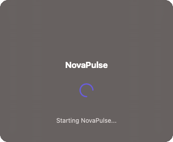

go-launcher
The Squirrel.Windows pattern for Go. External supervisor with versioned directories, crash-based rollback, and zero-dependency child integration.
The Squirrel.Windows pattern for Go. External supervisor with versioned directories, crash-based rollback, and zero-dependency child integration.
Every Go auto-update library uses self-surgery — the running binary replaces itself on disk, then restarts. If the new version crashes at startup, recovery logic never executes. If the replacement is interrupted, the binary is corrupted with no rollback path.
Discord, Slack, and VS Code solved this years ago: a thin launcher manages versioned directories side-by-side. The old version stays intact until the new one proves stable. go-launcher brings this pattern to Go.
your-launcher (thin binary, ~40 lines of your code + go-launcher) └── your-app (your actual application, spawned as child process) $DATA_DIR/ versions/ current/ # active version previous/ # rollback target staging/ # download in progress
Your app checks for new versions (your logic)
Child calls RequestUpdate() and exits
Launcher downloads to staging, verifies SHA-256
current/ → previous/, staging/ → current/
If new version crash-loops, automatic rollback
If the new version crash-loops, the previous version comes back automatically. No manual intervention.
New versions must survive a configurable window before being marked stable.
Prevents infinite swapping between two broken versions. Exits cleanly if both fail.
No sockets, no pipes. Communication via env vars and files. Debuggable, cross-platform, crash-safe.
The child package has zero transitive dependencies. Standard library only.
macOS, Windows, Linux. Platform-appropriate default paths for data and install directories.

Optional ui/splash package renders a native window during updates —
Cocoa on macOS, Win32 on Windows. Animated spinner, progress bar, and status text keep users informed
while the launcher downloads and applies a new version. No Electron. No web views. Zero extra dependencies.
Launcher (your thin supervisor binary):
package main import ( "context" "os" "github.com/razvandimescu/go-launcher" "github.com/razvandimescu/go-launcher/fetch" ) func main() { l := launcher.New(launcher.Config{ AppName: "My App", ChildBinaryName: "my-app", DataDir: launcher.DefaultDataDir("MyApp"), InstallDir: launcher.DefaultInstallDir("MyApp"), EnvVarName: "MYAPP_LAUNCHER_STATE_DIR", Fetcher: fetch.GitHubRelease("myorg", "myapp", fetch.AssetPattern("my-app-*")), }) os.Exit(l.Run(context.Background())) }
Child (your actual application):
package main import ( "os" "github.com/razvandimescu/go-launcher/child" ) func init() { child.SetEnvVar("MYAPP_LAUNCHER_STATE_DIR") } func main() { // Signal healthy startup if child.IsManaged() { child.TouchHeartbeat() } // ... your application runs ... // When you detect a new version: if child.IsManaged() { child.RequestUpdate("1.2.0", "https://example.com/v1.2.0", "sha256:abc...") os.Exit(0) // launcher handles the rest } }
| Library | Approach | Rollback | Supervisor | Versioned dirs | Built-in UI | Windows |
|---|---|---|---|---|---|---|
| go-selfupdate | Self-surgery | Apply-time | No | No | No | Yes |
| minio/selfupdate | Self-surgery | No | No | No | No | Yes |
| go-github-selfupdate | Self-surgery | Apply-time | No | No | No | Yes |
| overseer | Master/child | No | Yes | No | No | No |
| fynelabs/selfupdate | Self-surgery | Apply-time | No | No | No | Yes |
| go-launcher | External supervisor | Crash-based | Yes | Yes | Yes | Yes |
Apply-time rollback restores the old file if the rename fails during the swap. It does not help if the new version starts successfully but crashes 30 seconds later.
Crash-based rollback detects that the new version is crash-looping and automatically reverts to the previous known-good version — even if the new version ran briefly before crashing.